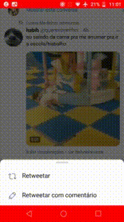
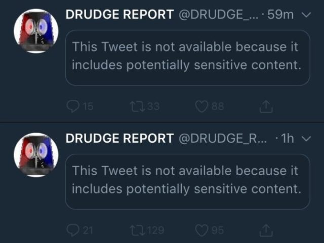
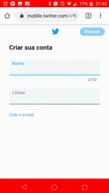
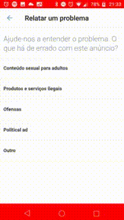

Telas
As telas são gifs das atividades do aplicativo Twitter referentes ao resquisitos levantados pela equipe na etapa de elicitação.
Tela R001

Tela R004
Tela R006
Tela R007

Tela R008

Tela R010
Tela R011
Tela R012

Tela R017

Tela R018

Tela R020

Tela R026
Tela R029
Tela R030

Tela R031
Tela R032
Tela R033

Tela R034
Versionamento de edições desta página
| Data | Autor | Descrição | Versão |
|---|---|---|---|
| 21/11/2019 | Lorrany | Criação da página | 0.1 |
| 21/11/2019 | Lorrany Azevedo | Adição de telas | 0.4 |
| 21/11/2019 | Bruno Duarte | Adicionando telas | 0.5 |
| 25/11/2019 | Eugênio Sales | Adicionando telas da R020 | 0.5 |
| 25/11/2019 | Lorrany Azevedo | Adicionando telas da R030 a R034 | 0.6 |